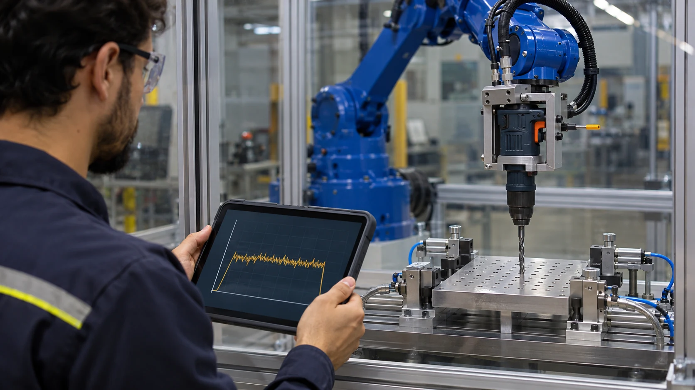
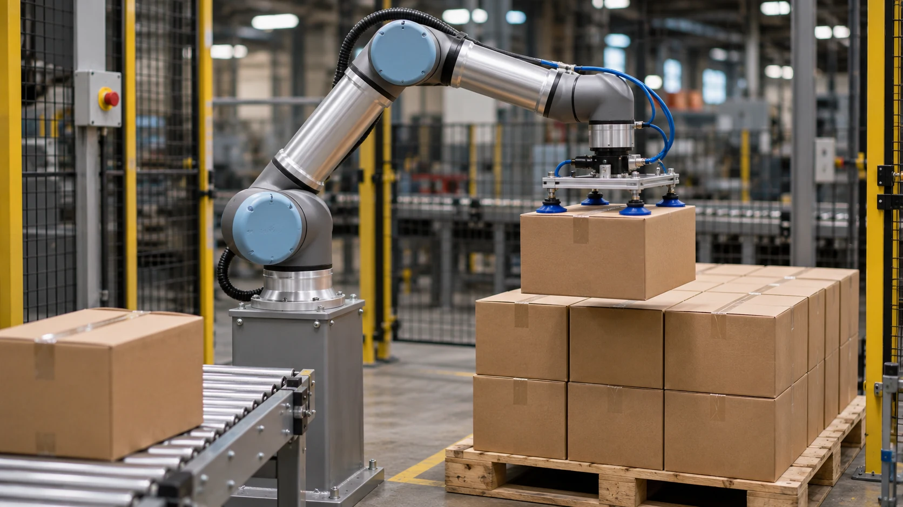
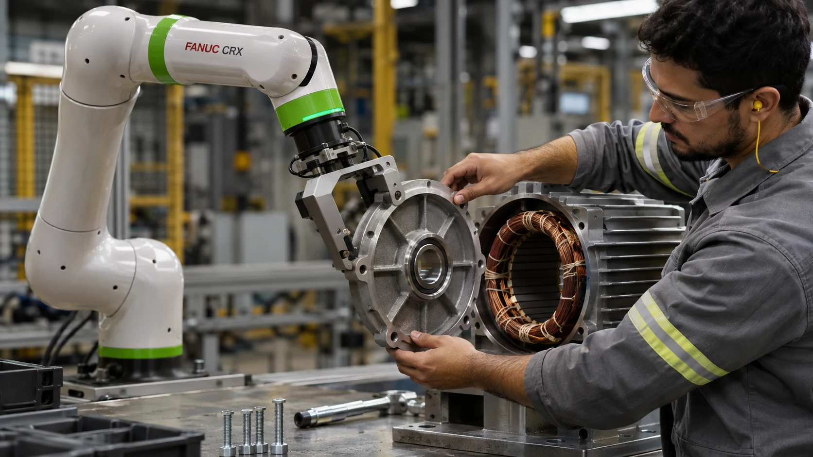

Conhecer projeto ↗ENSAIOS E CONTROLE DE PROCESSO
Ensaios de vida útil de brocas
Operação robotizada de ferramentas com supervisão e controle pneumático de força.
Yaskawa · Altus · Festo VTEM · PID
PORTFÓLIO PROFISSIONAL
Robótica · Automação Industrial · Integração
Desenvolvo e integro soluções com robôs industriais e colaborativos, CLPs e sistemas de visão. Da programação ao comissionamento e suporte em campo, transformo necessidades de processo em aplicações industriais.

PORTFÓLIO DE PROJETOS
Programação, integração e controle em aplicações industriais.

Conhecer projeto ↗ENSAIOS E CONTROLE DE PROCESSO
Operação robotizada de ferramentas com supervisão e controle pneumático de força.
Yaskawa · Altus · Festo VTEM · PID

Conhecer projeto ↗ROBÓTICA COLABORATIVA E VISÃO
Visão industrial e condução manual guiada para manipulação de tampas de motores elétricos.
FANUC · Visão industrial · Rockwell
PALETIZAÇÃO E MANIPULAÇÃO
Paletização, integração com periféricos e aplicações robotizadas em diferentes processos industriais.
Universal Robots · CLPs · Garras a vácuo
Imagens ilustrativas geradas por IA, inspiradas nas aplicações descritas. Não representam as instalações reais.
FERRAMENTAS DE TRABALHO
Universal Robots, FANUC, Yaskawa, KUKA, Epson e JAKA.
Maior experiência com UR3, UR5, UR10, UR12, UR15, UR20 e UR30.
CLPs e IHMs Siemens, Rockwell, Altus e Delta. Sistemas de visão, pneumática, sensores e controle PID.
BluePlant · FactoryTalk Optix
Simulação, diagnóstico, comunicação industrial e leitura de projetos elétricos.
RoboDK · Visual Components · C# · Python · SQL
QUEM SOU
Sou técnico em Mecatrônica pelo SENAI e graduando em Engenharia de Software. Minha trajetória em automação envolve desenvolvimento, integração, comissionamento e manutenção de células robotizadas.
Atuei na Payback Engenharia em programação e integração de aplicações industriais e na RW Robots em desenvolvimento, manutenção e suporte técnico em robótica.
Busco oportunidades profissionais e projetos em que possa contribuir com programação, integração e melhoria de processos.
Baixar currículo ↓CONTATO
Disponível para conversar sobre oportunidades profissionais e serviços na área.
Entrar em contato ↗lucas.machado2001@hotmail.com